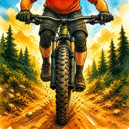
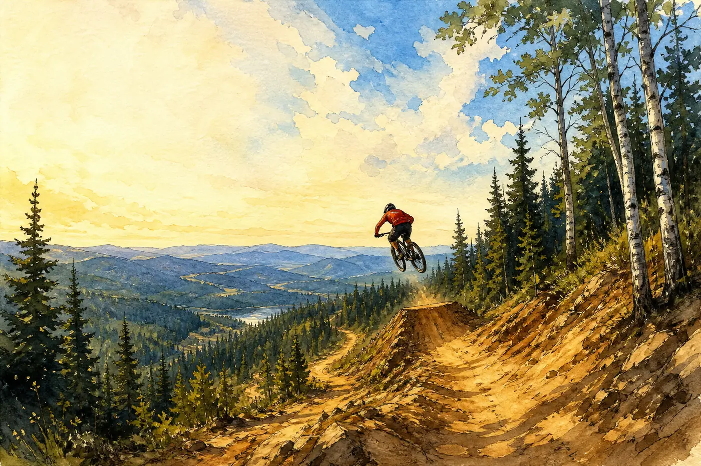
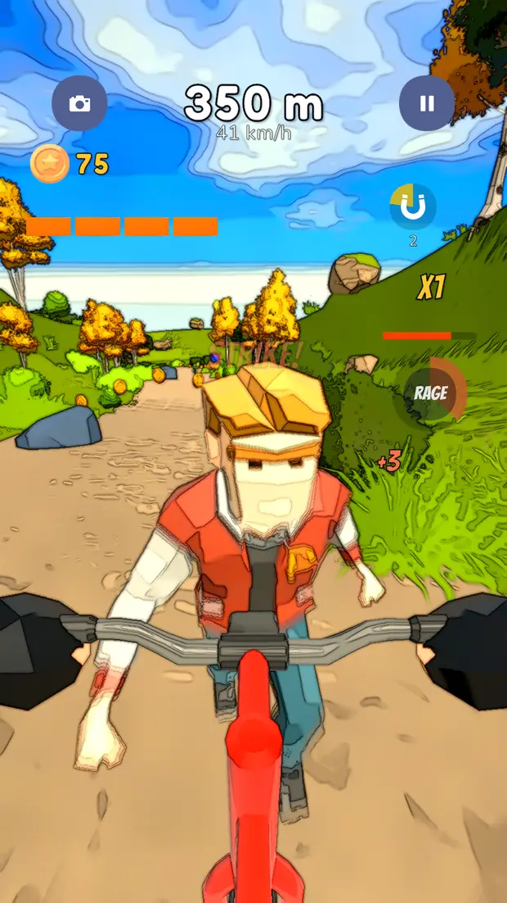
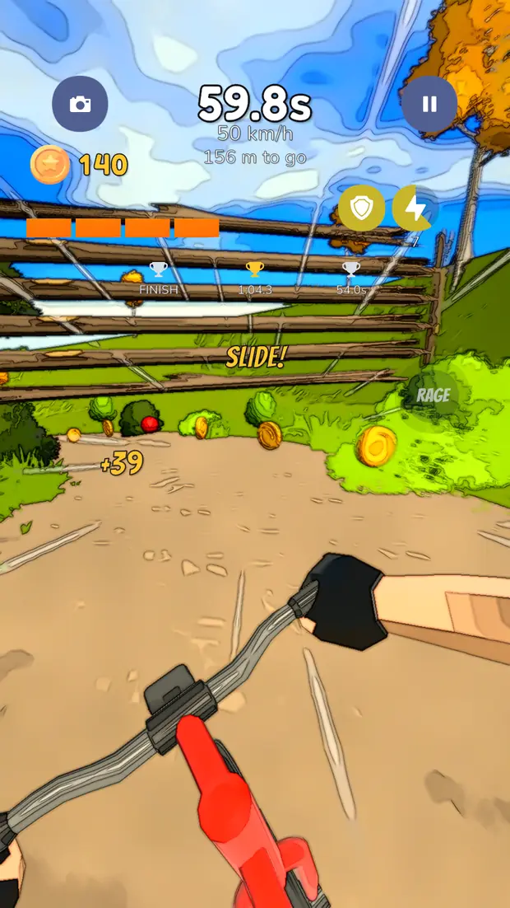
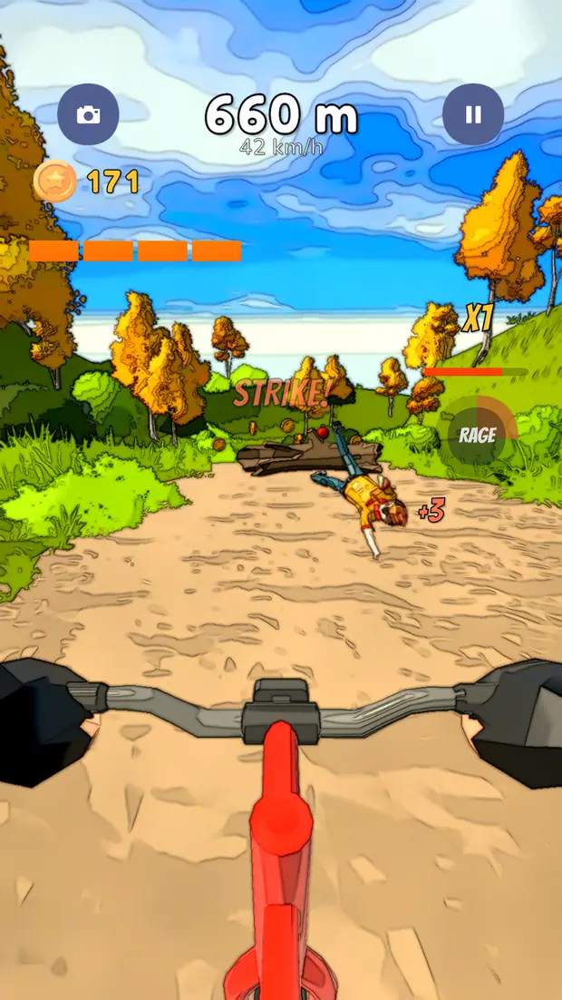
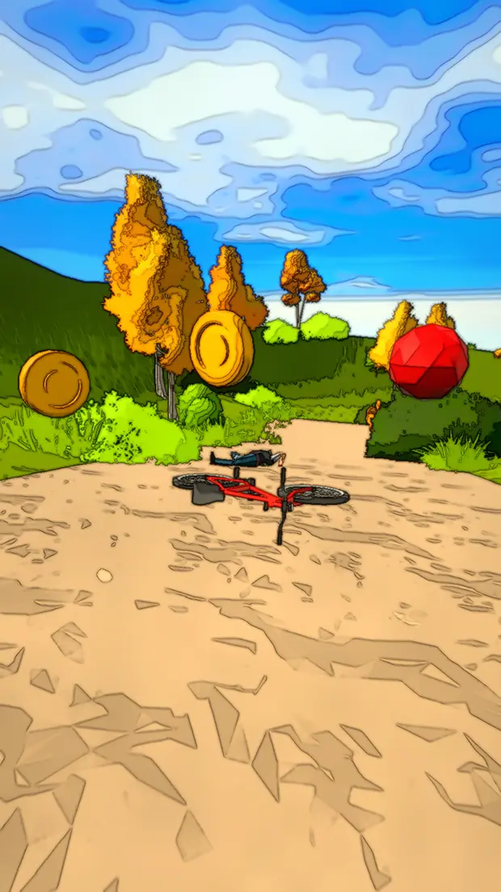
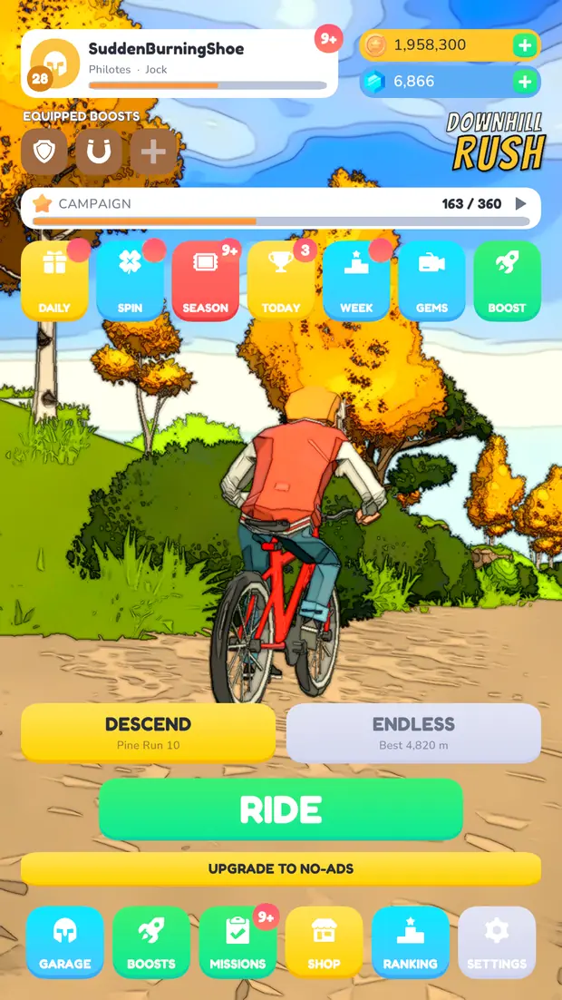
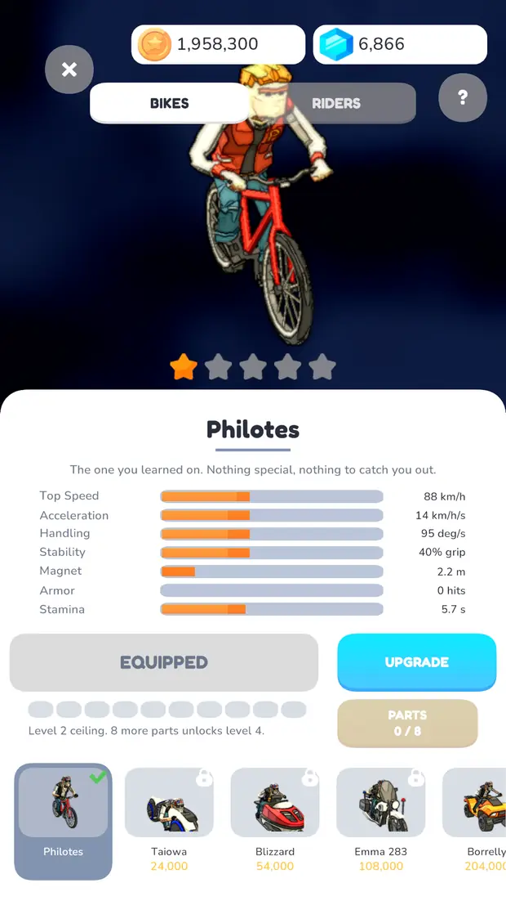
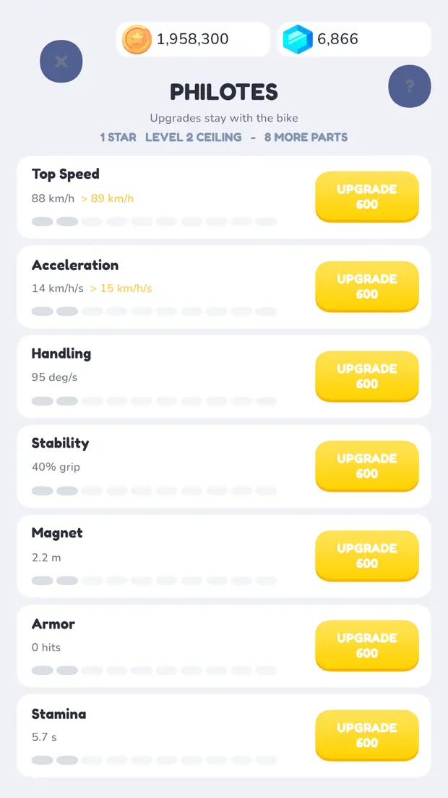
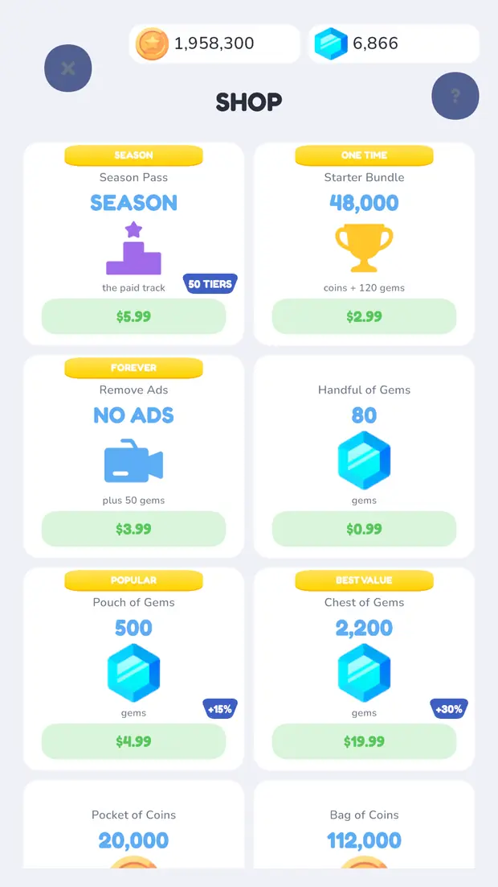

Steering is a skill
Most runners give you three lanes and a swipe. This gives you the whole trail. Lean hard enough into a corner and the back end steps out into a drift, which costs you grip and buys you angle.

Jay ShahFree on Google Play and the App Store
You are on a bike, at the top of a mountain, and the trail only goes one way.

A first-person endless descent through a hand-painted forest valley. Hold anywhere on the screen and the bike goes where your thumb is.
Most runners give you three lanes and a swipe. This gives you the whole trail. Lean hard enough into a corner and the back end steps out into a drift, which costs you grip and buys you angle.
The trail is built out of rolling whoops and kicker crests. Hit one flat out and you clear thirty metres of trail and whatever was sitting on it. Steering barely works in the air.
Run wide and you are on the bank, fighting for grip and threading between trunks with the camera shaking itself apart. It is survivable. It is rarely a good idea.
Recorded on a phone, held the way the game is played. The distance and the speed on the readout are the real ones.
Nothing is requested from YouTube until you press play.
The whole game runs through a watercolour pass — soft washes, ink contours, paper grain. It looks like a moving illustration, and at 100 km/h it looks like one that is about to come apart.








Scroll sideways, or use the arrow keys.
A whole mountain. Each descent asks for a distance, a time, or simply that you last.
It plays offline, start to finish. No timers, no energy, no waiting.
I'm Jay Shah, a developer in Toronto. I work on backend and AI systems professionally, and I build mobile games the rest of the time.
Downhill Rush: Bike Racer is the first one I have released. I built it on my own in Unity — the riding physics, the watercolour render pass, the seasons and leaderboards running behind it, and the store listings in all eleven languages. It shipped to Google Play and the App Store on the same day.
It is not the last one. If you want to hear about the next, the email address below is the best way to reach me.
Bug reports, press, or anything about the game. This is the same address printed on both store listings. If you are writing about a problem with your account, include the player id from the bottom of the in-game Settings screen — without it there is no way to find your record.